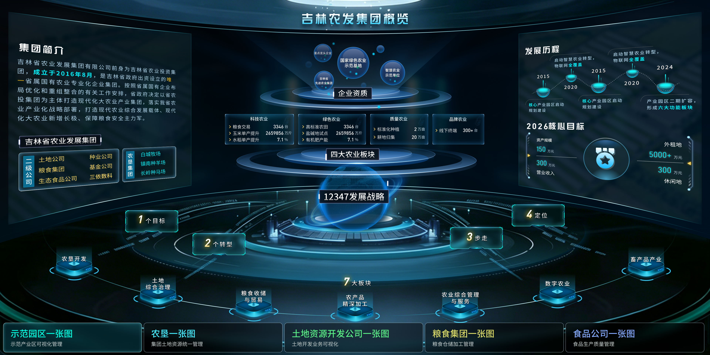
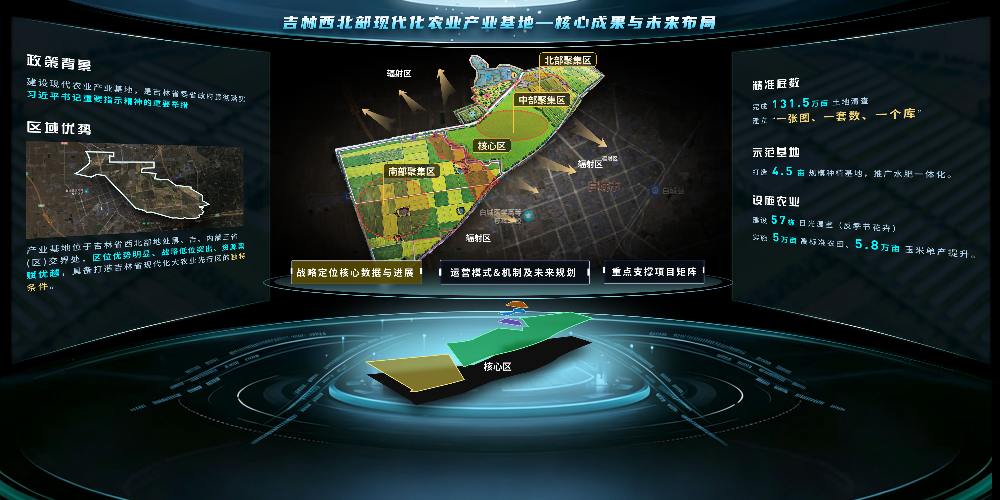
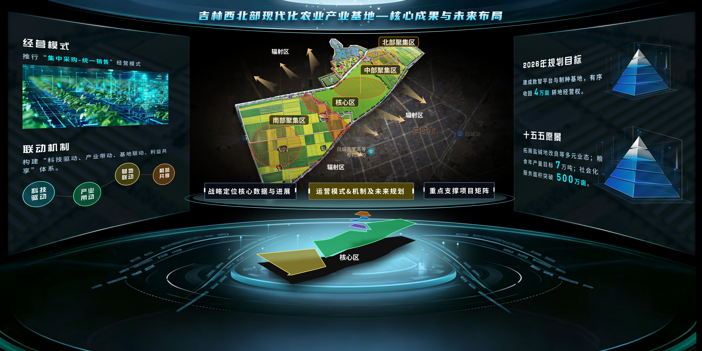
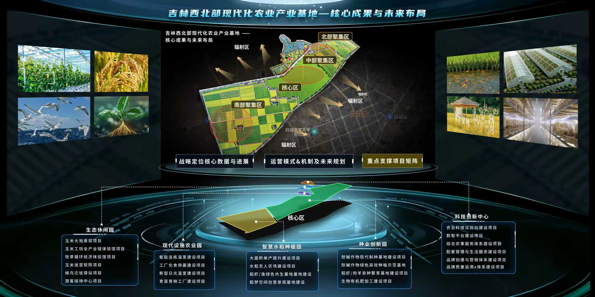

农发集团智慧农业综合管控平台

落实四个功能定位
作为承接国家农业政策的主要载体、整合省内优质农业资源的平台、发展农业新质生产力的开拓者、保障全省粮食安全的主力军。
"三步走"发展步骤
第一阶段重组整合后，围绕土地、种业和粮食等方面夯实基础性工作；第二阶段向米袋子、菜篮子、油瓶子和肉案子迈进；第三阶段切实发挥省政府实施大农业产业集群战略的市场抓手和桥梁纽带作用，真正成为全国人民的大型原粮供应商和全省人民主要的餐桌供应商。
实现两个转型
从"投资平台"向"实体产业集团"转型；从"粮食仓储贸易"向"从土地到种子到餐桌全链条业务以及粮食精深加工"转型。
聚焦一个目标
对标国内一流、打造区域领先的现代大农业产业集团。
方向：
服务千万头肉牛工程，聚焦精深加工、品牌培育、冷链物流
目标：
推动从"卖活体牛"向"卖牛产品"转变，实现一二三产融合
平台：
依托三侬数科，搭建粮食数字化交易综合服务平台
应用：
建设智慧农场样板，输出"吉农发"智慧农业解决方案
种业：
重组吉农高新，联合科研院所，构建"育繁推"一体化，主攻玉米/水稻/大豆/肉牛品种
农资农机农技：
打造"合作社+企业+农户"模式，提供一站式综合农事服务
大成集团：
实施"十大工程"改革脱困，2026年大合园区利润5000万元，兴隆山园区正向现金流
生态食品集团：
聚焦鲜食玉米等8大品类、150个单品，2026年销售额超5亿元，打造2-3个知名品牌
定位：
大型粮食供应商，构建"北粮南运"业务链
目标：
2026年底有效仓容150万吨，累计经营量500万吨
模式：
"融投建运管"五位一体，推进高标准农田+盐碱地治理
目标：
2026年底累计高标准农田300万亩，其中流转归集耕地90万亩
先期整合：
镇南种羊场、吉源农业、长岭种马场 → 组建大型农垦集团
后期拓展：
整合县域农垦资源，土地面积达532万亩，自有经营耕地突破300万亩
白城牧场
×
基础信息
土地资源
经营数据
生产数据
设备数据
×
×
⏳
敬请期待
×



战略定位核心数据与进展
运营模式&机制及未来规划
重点支撑项目